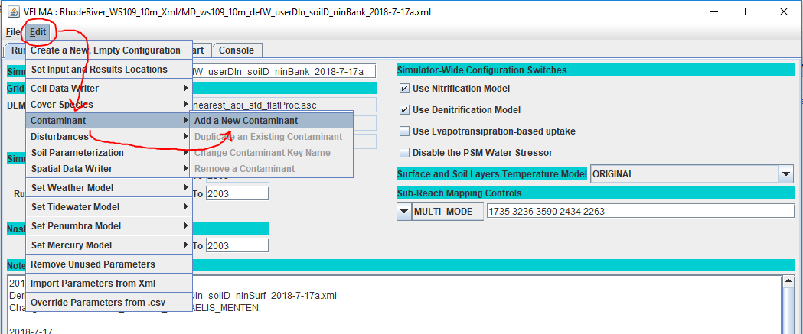
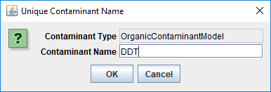
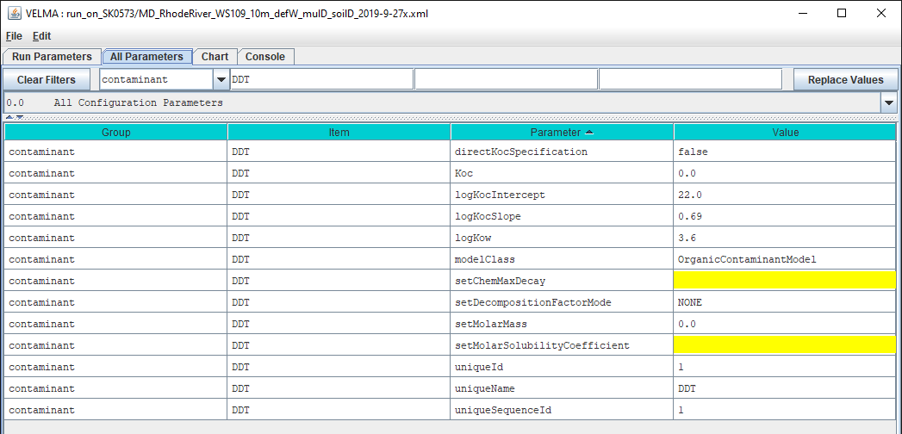

VELMA Organic Contaminants
Overview
VELMA supports the addition of one or more Organic Contaminants to a simulation configuration. Each contaminant is added as its own set of parameters, and models one specific organic contaminant (e.g., DDT) during a simulation run.
Organic contaminants added to a VELMA simulation configuration undergo decomposition and lateral and vertical transport during each simulation step. No other processes occur for contaminants. Currently, only one type of decomposition is available, based on equations developed by C.S. Potter, et. al, and parameterized by microbe efficiency and a maximum decay factor.
Unlike VELMA's core chemistry pools (NH4, NO3, etc.), there is no global, initial amount of contaminant added to the simulation state at simulation start. Configuring one or more contaminant parameterizations requires configuration an equal number (or more) of VELMA disturbance parameterizations to introduce actual amounts of the contaminant into the simulation state. VELMA disturbances can be configured to introduce specific amounts of contaminant to specific locations of the simulation watershed and arbitrary steps during the simulation run. Each parameterized contaminant adds its own surface and layered spatial data pools and a loss-tracking temporal data arrays to the simulation state at runtime.
Spatial Data Writers may be configured for contaminant pools, but unlike other spatial data pools in VELMA (e.g. NO3) the contaminant pool key-name provided to the Spatial Data Writer parameterization is derived from a common root and the contaminant-specific parameterization pool name.
See the patial data writer section of this document for details.
Configuring a VELMA Simulation Run to Include ContaminantsConfiguration Overview
As a best practice, start with a “proven” VELMA simulation configuration -- i.e., a simulation configuration .xml file that is already calibrated and known to run reliably and accurately for your study site. Load that simulation configuration .xml file into JVelma and immediately change its “Simulation Run Name” (i.e. the run_index parameter's value), then save it. This creates a copy of the original .xml that you can modify with contaminant additions, while leaving the original .xml unchanged and available for other use.
It is not necessary to have a proven simulation configuration .xml, but it is a very good idea. You can start with a new, empty simulation configuration, and include one or more Organic Contaminant parameterization groups from the start. However, properly calibrated simulation site hydrology is required for accurate Organic Contaminant transport, and calibrating hydrology is complicated enough that it is almost always better to focus on doing so first, before adding the additional complexity of Organic contaminant parameterization and calibration.
With the simulation configuration you are going to use loaded into JVelma, adding one or more contaminants involves the following steps for each contaminant you wish to add:
- Add a new Contaminant parameterization group to the simulation configuration.
- Add one or more Disturbance parameterization groups to the simulation configuration to introduce amounts of the contaminant to the simulation run at specific times and locations.
- (Optionally) Add one or more Spatial Data Writer parameterization groups to produce spatially-explicit
.ascmap file results for the contaminant.
The DailyResults.csv, and DailyContaminantResults.csv files, along with any configuration-specified Cell Data Writer .csv files automatically include columns for any contaminants added to a simulation configuration. However, spatially-data capture for contaminants must be explicity specified and parameterized.
Completing the steps above and saving the changes will provide contaminant-parameterized simulation that is ready to run.
Adding a Contaminant Parameterization Group to a VELMA Configuration
Load a VELMA simulation configuration into JVelma, then click the Edit -> Contaminants -> "Add a New Contaminant" menu item.

In the "Unique Contaminant Name" pop-up dialog that opens next, provide a name for the contaminant.
The name must:
- Begin with an alphabet character.
- Contain only alpha-numeric and underscore (“_”) characters.
- Remain unique among all contaminants in the configuration.

Clicking OK in the “Unique Contaminant Name” dialog adds the new parameterization group to the simulation configuration and changes JVelma's display to the “All Parameters” tab, with the Item-level filter set to display the the parameters for the newly-added contaminant.

You can click the “Parameter” column header to sort the parameters by name (as was done for the screen-capture image above.)
Initially, some of the contaminant's parameters are set, while others are blank (and highlighted yellow).
A few of the parameters that are set have default values that should not be changed. However, the majority of the parameters that are set have default values that you will need to change for the specific contaminant you are adding. You will also need to provide contaminant-appropriate values for the parameters that are blank.
Parameters That Can be Left AloneThe modelClass parameter is set by JVelma when you add the contaminant to the simulation configuration. Do Not Change this parameter's value. Ever.
The uniqueName parameter is set to the name you specified while adding the contaminant parameterization to the configuration. After that initial specification, we recommend never changing this parameter's value, because it is used as part of the name for the contaminant's spatial data pools. If you do change uniqueName's value, any Disturbances referencing its spatial data pools must update those pool names as well.
The uniqueId parameter was generated automatically and should be left as-is. The uniqueSequenceId determines the sequence in which the contaminants are processed during each VELMA simulation step. It is provided for future, possible enhancements to the contaminants code that would let one contaminant interact with another. However, that functionality is currently unavailable, and the uniqueSequenceId values that JVelma generates for you can be left as-is.
Decomposition Parameters
The setMicrobeCefficiency parameter is the fractional (range [0.0, 1.0]) efficiency of microbe activity upon this organic contaminant.
setChemMaxDecay is the maximum daily decay rate constant (fraction per day) of this contaminant.
Comptox (https://comptox.epa.gov) et. al list the half-life for most organic contaminants.
The value for the setChemMaxDecay parameter can be calculated from the half-life.
(Various calculators are also available on the web.)
The Organic Contaminant Model provides two seperate and disjoint ways to specify the Koc value used for calculating the sorbed/aqueous partitioning of the contaminant.
Set directKocSpecification boolean parameter to choose which of the parameters are used.
NOTE! Parameters that are ignored must still have values set for them -- however the values can be placeholders, since they are ignored.
| Value | Parameters Used |
|---|---|
true |
Koc |
false |
logKocSlope, logKow, logKocIntercept |
As the table above indicates, when directKocSpecification == true, the Koc parameter's value is used as-is:Simulation Koc = Kocbut when directKocSpecification == false, the Koc parameter's value is ignored, and the Koc value used during simulation runs is computed using the following equation:Simulation Koc = 10^(logKocSlope * logKow + logKocIntercept)
Note the distinction: when directKocSpecification == false, the Koc parameter is ignored, but a Koc value is still specified -- by calculating it from the other parameters.
Koc is the Koc value for this contaminant.
logKocIntercept (unitless) is the intercept parameter for the linear-regression equation describing the correlation of LogKoc to LogKow for this contaminant.
logKocSlope (unitless) is the slope parameter for the linear-regression equation describing the correlation of LogKox to LogKow for this contaminant.
logKow (units of log10 Kow) is the Octanol-water partition coefficient for this contaminant.
setMolarMass is this contaminant's mass, in grams per mol (g/mol).
setMolarSolubilityCoefficient is the solubility coefficient of this chemical in mol per liter (mol/L).
Adding Contaminant Deposition
Including one or more OrganicContaminantModel parameterizations in a VELMA simulation configuration does not add any actual chemical amounts to the simulation run. To introduce amounts of the contaminant(s) into the contaminant pools, you'll need to parameterize one or more disturbance events.
You can use Surface Deposition disturbances or Modify Spatial Data By Map disturbances (or one or more instances of both) to introduce contaminant amounts into the contaminant pools.
For general information on how to configure these disturbances, see the following documentation:
- HowTo SurfaceDeposition Disturbance_2018-9-17.docx (Currently not available online: retrieve a copy from the VELMA project shared disk space.)
- Modify Spatial Data by Map
You must provide properly configured contaminant pool names to whatever disturbances you use for contaminant deposition into those pools. Use the same prefix + suffix naming rules that are required for configuring spatial data writer.
Simulation Results for Contaminants
When a VELMA simulation configuration contains one or more contaminants, an additional daily results file is written as part of the simulation's results. The file is named DailyContaminantResults.csv and contains daily-averaged values for each contaminant's surface and layered pools as well as surface and layered watershed loss amounts (the amount calculated to have left the watershed via transfer from non-channel to channel cells).
Additionally, Cell Data Writers specified for a VELMA simulation configuration contain rows reporting the surface and layer amounts, and the surface and layer lateral-outflow amounts for each contaminant in the simulation configuration.
Daily and Cell Writer .csv file column names for contaminant results begin with the prefix CONTAMINANT_, or Contaminant_. Column names for surface pools follow CONTAMINANT_ with SURFACE_. After these keywords, the uniqueName value of the specific contaminant appears.
Configuring Spatial Data Writers for Contaminant Data
If you wish to generate spatially-explicit contaminant results data, you must specify Spatial Data Writer parameterization groups for each contaminant data you want reported.
A contaminant parameterization group has two spatial data pools:
- A single-layer Surface Pool
- A multiple-layer Layered Pool.
Both pools store per-cell (and per-cell, per-layer for the layered pool) quantities of the contaminant itself, in units of grams per meter.
Contaminant spatial data pool names are constructed using a common prefix and a unique suffix. To provide proper key-name for disturbances or spatial data writers parameterized to reference or modify contaminant pool values, you must know how to construct the specific pool name for a specific contaminant pool.
The contaminant's surface pool prefix is CONTAMINANT_SURFACE_ and the suffix is the contaminant's uniqueName parameter value shifted to all-uppercase.
Example
If uniqueName == “Glysophate”, the surface pool key-name will be: CONTAMINANT_SURFACE_GLYSOPHATE.
Similarly, the contaminant's layered pool prefix is CONTAMINANT_LAYERS_ and the suffix is the uniqueName parameter value shifted to all-uppercase.
Example If uniqueName == "DDT", the layered pool key-name will be: CONTAMINANT_LAYERS_DDT.